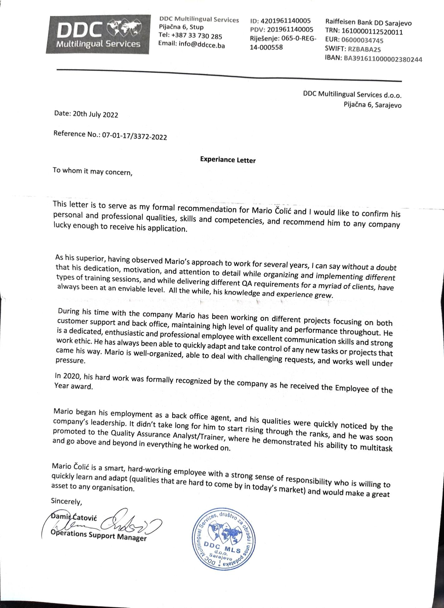
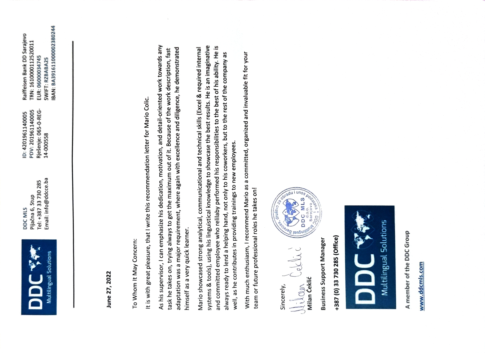

I am an ambitious and motivated individual who is eager to succeed in any field I work in. I am always willing to
learn and grow, and I strive to reach my maximum potential in everything I do. I am confident in my ability to take
on new challenges, and I am not afraid to take on responsibilities.
Education
Gimnazija Dobrinja [2013 – 2017]
Bachelor of Economics
Univerzitet za Poslovne Studije, Banja Luka [ 01/10/2019 – 05/10/2021 ]
I am proud to have two glowing recommendation letters from my Operation Support Manager and Business
Support Manager. These letters serve as a testament to my exceptional performance and dedication to the
success of the organization.
Worked as an energy specialist for numerous supplier in the UK (Toto Energy, Brilliant Energy, GB Energy, Octopus
Energy, Shell Energy, Bulb Energy). As an Energy Specialist at a Utility Supplier in the United Kingdom, I was
responsible for providing expert advice and support to customers regarding their energy consumption, billing,
and other related issues. My primary focus was to ensure customer satisfaction and retention, by offering
tailored solutions and advice that met their unique needs.
Handled a high volume of inbound calls, emails, and live chats, providing timely and accurate information to
customers.
Maintained up-to-date knowledge of the energy market, industry regulations, and company products and
services, in order to provide the best possible advice and support to customers.
Worked closely with other departments, such as billing, metering, and technical support, to resolve
customer issues and ensure efficient and effective service delivery.
Conducted research and analysis, using various tools and software, to identify patterns and trends in
customer inquiries and complaints, and make recommendations for process improvement.
Offered expert advice and guidance to customers on a wide range of energy-related issues, including
consumption, billing, tariffs, and energy-saving measures.
Managed customer accounts, ensuring accuracy and timely processing of requests, such as meter readings,
bill payments, and tariff changes, metering issues.
Handled and resolved customer complaints, escalating issues to the appropriate departments as needed.
Maintained detailed records of all customer interactions, using various systems and software, to ensure
accurate and up-to-date information.
Customer Service Representative / Industry Operations Analyst
Worked as a customer service representative as a part of Octopus Energy Project in DDCMLS
Handled ongoing complaints from customers in a busy contact centre, utilizing active listening and problemsolving skills to resolve issues and maintain high levels of customer satisfaction.
Responded to customer inquiries and complaints via multiple communication channels, including phone,
email, and chat, while providing clear and concise responses to customer questions and concerns.
Demonstrated a deep understanding of the company's products and services, as well as policies and
procedures related to customer service and complaint handling, to assist customers effectively.
Logged customer feedback and complaints, analyzed data to identify patterns and trends, and
recommended improvements to the company's products and services.
Maintained accurate and detailed records of customer interactions, and collaborated with team members
to ensure consistent service delivery and knowledge sharing.
Managed multiple customer inquiries and complaints simultaneously in a fast-paced environment, while
meeting performance metrics related to customer satisfaction, first call resolution, and average handling
time
Quality Analyst/Trainer in a Customer Service Sector
Conducted quality evaluations of customer service representatives' interactions with customers and
provided feedback on areas for improvement to maintain high levels of customer satisfaction.
Designed and delivered training programs for new and existing customer service representatives, including
classroom training and on-the-job coaching
Developed and maintained training materials, including training manuals, job aids, and multimedia
resources, to ensure consistency and quality in training delivery.
Led training sessions for groups ranging from one to 45 people, and managed individual coaching sessions
to address performance gaps and improve customer service skills.
Worked collaboratively with other team members to identify training needs, and provided input on the
development of new training programs and materials.
Evaluated training program effectiveness and made recommendations for program improvement to
enhance customer service representatives' performance and results.
Maintained accurate records of training activities, including attendance, feedback, and evaluations, and
communicated progress and results to management.
Stayed up-to-date with industry trends and best practices in training and customer service, and shared
knowledge and resources with colleagues to enhance the team's expertise.
Perform weekly/monthly and any ad hoc reports when required including root cause analysis and
improvement areas when and where applicable
Support the team with any queries that Team Leader cannot resolve.
Work Related skills
Customer Service Representative
Possess excellent customer service skills, including the ability to effectively manage customer inquiries and
complaints in a timely and efficient manner.
Demonstrated the ability to multitask and manage high call volumes, while maintaining a professional and
friendly demeanor at all times
Displayed strong problem-solving skills, identifying issues, and providing solutions that meet or exceed
customer expectations.
Proven ability to use various customer service software and tools, such as CRM systems and call center
software, to document customer interactions, follow up on requests, and track progress.
Possess outstanding communication skills, including the ability to listen actively, communicate clearly and
concisely, and adjust communication style to meet the needs of diverse customers.
Quality Analyst/Trainer
Possess strong training and coaching skills, including the ability to lead training sessions, develop training
materials, and provide individualized coaching to customer service representatives.
Displayed proficiency in quality assurance and control, including the ability to monitor and evaluate calls,
identify areas for improvement, and provide feedback to team members.
Demonstrated the ability to develop and implement quality metrics and standards, ensuring consistency
and efficiency in all customer service activities
Proven ability to use various QA and training software and tools, such as quality monitoring systems and
learning management systems, to track and monitor progress, identify issues, and ensure timely resolution
of any problems that arise.
Displayed strong analytical skills, including the ability to gather and analyze data, identify trends, and make
recommendations for process improvement.
Possess outstanding communication and interpersonal skills, including the ability to communicate
effectively with colleagues, management, and customers, while maintaining a professional and friendly
demeanor at all times.
Recommendations
I am proud to have two glowing recommendation letters from my Operation Support Manager and Business
Support Manager. These letters serve as a testament to my exceptional performance and dedication to the
success of the organization.
In the recommendation letters, my managers highlight my strong work ethic, attention to detail, and ability to
work effectively with team members and Upper Management at all levels of the organization. They also recognize
my contributions to process improvement and my commitment to achieving goals and targets. They speak highly
of my positive attitude, reliability, and willingness to take on new challenges.
Having these recommendation letters from highly respected and influential individuals in the company is a
testament to my work and achievements, and I believe it sets me apart as a highly valuable asset to any
organization. I am proud to have received these letters, and I believe they speak to my potential and ability to
make a significant impact in any role or team I am a part of.


Employee of the Year Award
Recognized as the Employee of the Year 2020 in a company with almost 2000 employees, for outstanding
contributions to the organization's success.
Demonstrated exceptional job performance, exceeding targets and achieving key performance indicators in
various areas.
Displayed outstanding leadership skills, fostering a positive and supportive team environment and
mentoring colleagues to achieve success
Contributed to the company's growth and success, through innovative ideas and strategic initiatives,
resulting in increased revenue and improved customer satisfaction.
Consistently displayed a high level of professionalism, dedication, and commitment to excellence, and
served as a role model for colleagues across the organization.
. Recognized for consistently going above and beyond, delivering exceptional results, and contributing to the
company's continued success.
Received outstanding feedback from customers and colleagues, resulting in a high level of trust, respect,
and confidence in my abilities.
Received outstanding feedback from customers and colleagues, resulting in a high level of trust, respect,
and confidence in my abilities.